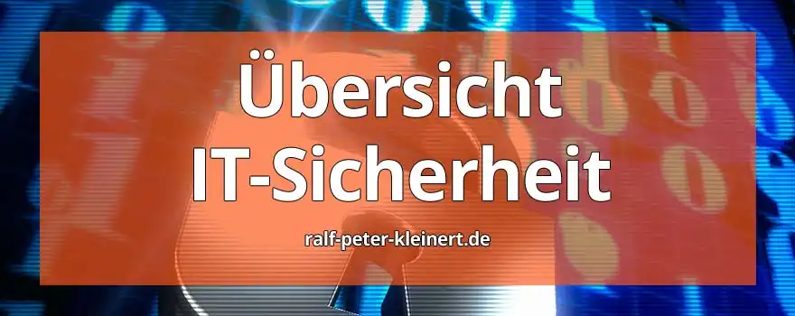

Hier habe ich noch mal eine übersichtliche Auflistung mit Verlinkung
zu den Themen der Computersicherheit auf meiner Website. Ich erstelle
meine Themen und Artikel nach bestem Wissen und nach dem aktuellsten
Stand. Die Artikel sind am Ende mit einem Stand-Datum versehen, damit
sie sehen können wie aktuell die Informationen sind.
Ashampoo Backup Pro 26 - Windows Backup leicht gemacht
02.05.2025
Windows wird ständig verändert – neue Updates, neue Probleme. Ich habe genug davon, mich jedes Mal auf Glück oder Zufall zu verlassen. Deshalb setze ich auf Ashampoo Backup Pro 26. In meinem Blogartikel zeige ich, warum ich mir das 16 €-Abo geholt habe, wie einfach die Einrichtung ist und weshalb regelmäßige Updates für mich der entscheidende Unterschied sind. Eine Backup-Software, die mitdenkt – made in Germany.
Mit Ashampoo Backup auf der sicheren Backupseite.
Die beste und sicherste Art seine Passworte zu speichern KeePassXC und Proton
24.03.2025
In diesem Artikel zeige ich Ihnen auf, wie Sie Ihre Passwörter aktuell am sichersten und zuverlässigsten speichern und bei Bedarf auch synchronisieren können – ganz ohne Abo, ganz ohne Cloud-Zwang. Dabei geht es nicht nur um Technik, sondern vor allem um Kontrolle: Ihre Daten gehören Ihnen, und genau so soll es bleiben. Damit der Einstieg möglichst einfach wird, habe ich ein YouTube-Tutorial erstellt, in dem ich die Einrichtung Schritt für Schritt erkläre. So können Sie direkt loslegen – ohne Rätselraten, ohne Stolperfallen.
Die beste und sicherste Art seine Passworte zu speichern KeePassXC und Proton
Open Source - IT-Sicherheit für Behörden und Ämter
13.01.2025
Open Source bietet Behörden kosteneffiziente und datenschutzfreundliche Lösungen. Software wie Proxmox oder LibreOffice reduziert Lizenzkosten, stärkt die IT-Souveränität und ermöglicht volle Kontrolle über Daten – ein Vorteil gegenüber US-Anbietern, die den Datenschutz oft gefährden. Systeme wie Proxmox Backup Server und Proxmox Mail Gateway erhöhen Ausfallsicherheit und schützen vor Cyberangriffen. Open Source ist eine zukunftssichere Alternative, die IT-Sicherheit gewährleistet und gleichzeitig den Steuerzahler entlastet.
Passkeys Nutzen und Verstehen - Einrichtung von Passkey
17.02.2025 Aktualisiert
Lernen Sie alles über Passkeys, die sichere und bequeme Alternative zu herkömmlichen Passwörtern. Passkeys basieren auf moderner Public-Key-Kryptografie und ermöglichen es, sich ohne die Eingabe von Passwörtern sicher bei Online-Diensten anzumelden. Statt Passwörter zu verwenden, generieren Passkeys ein Schlüsselpaar: Ein öffentlicher Schlüssel wird beim Dienst gespeichert, während der private Schlüssel sicher auf Ihrem Gerät bleibt. Dieser private Schlüssel wird zur Authentifizierung genutzt, ohne jemals das Gerät zu verlassen. Passkeys bieten dadurch einen hohen Schutz vor Phishing-Angriffen, da der private Schlüssel niemals mit dem Server geteilt wird.
IT-Sicherheit für Privatpersonen
In einer zunehmend digitalen Welt ist IT-Sicherheit für Privatpersonen von entscheidender Bedeutung. Unser Online-Leben birgt potenzielle Gefahren, von Datenlecks bis zu Cyberangriffen. Auf meiner Website finden Sie fundierte Informationen, die Ihnen helfen, ein besseres Verständnis für die Grundlagen der IT-Sicherheit zu entwickeln. Von sicheren Passwortpraktiken bis zu aktuellen Bedrohungen – mein Ziel ist es, Ihnen die Werkzeuge und Kenntnisse bereitzustellen, um Ihre digitale Identität zu schützen. Informieren Sie sich, bleiben Sie sicher und geben Sie Hackern keine Chance!
In der heutigen Geschäftswelt ist eine robuste
IT-Sicherheitsstrategie unerlässlich. Auf meiner Website präsentiere ich
umfassende Informationen, die Unternehmen dabei unterstützen, ein
tieferes Verständnis für die komplexe Welt der IT-Sicherheit zu
entwickeln. Von Schutz vor Cyberbedrohungen bis zur Implementierung
sicherer Geschäftspraktiken – meine Ressourcen bieten klare Einblicke
und praktische Anleitungen. Denn nur mit einem soliden
Sicherheitsfundament können Unternehmen ihre Daten, Kunden und
Reputation schützen. Informieren Sie sich auf meiner Website, stärken
Sie Ihre Sicherheitsstrategie und gestalten Sie eine digitale Zukunft,
die auf Vertrauen und Widerstandsfähigkeit aufbaut.
IT-Sicherheit, Datensicherheit, Informationssicherheit
Der Artikel beleuchtet die Essenz von IT-Sicherheit und deren
Definition. In klaren Worten erläutert er, wie IT-Sicherheit als
umfassender Schutz vor Cyberbedrohungen und Datenverlusten fungiert.
Dabei wird betont, dass IT-Sicherheit weit mehr ist als nur Technologie –
sie umfasst auch Prozesse und bewusstes Verhalten. Die Zusammenfassung
bietet einen prägnanten Einblick in die Kernaspekte der IT-Sicherheit,
ideal für jeden, der ein grundlegendes Verständnis für dieses kritische
Thema erlangen möchte. Besuchen Sie die Website, um den vollständigen
Artikel zu lesen und Ihr Wissen zu vertiefen.
Warum sind Backups wichtig für die IT Sicherheit?
In der zunehmend digitalisierten Welt spielen Backups eine
entscheidende Rolle für die IT-Sicherheit. Warum sind sie so wichtig?
Erstens bieten Backups einen wirksamen Schutz gegen Datenverlust durch
unvorhergesehene Ereignisse wie Hardware-Ausfälle oder Cyberangriffe.
Doch wie gestaltet man effektive Backups? Hier kommt die zweite Frage
ins Spiel. Welche Strategien und Technologien sollten Unternehmen und
Privatpersonen anwenden, um robuste und verlässliche Backups zu
gewährleisten? In meinem Artikel gehe ich auf diese Fragen ein,
erläutere die fundamentale Bedeutung von Backups und reiche praxisnahe
Empfehlungen für eine umfassende IT-Sicherheit. Denn ein durchdachtes
Backup-Management ist nicht nur eine Vorsichtsmaßnahme, sondern eine
unverzichtbare Sicherheitsmaßnahme in der digitalen Ära. Lesen Sie
meinen Artikel, um mehr zu erfahren und Ihre Daten zu schützen.
Kostenlose IT-Sicherheits-Bücher & Information via Newsletter
Bleiben Sie informiert, wann es meine Bücher kostenlos in einer Aktion gibt: Mit meinem Newsletter erfahren Sie viermal im Jahr von Aktionen auf Amazon und anderen Plattformen, bei denen meine IT-Sicherheits-Bücher gratis erhältlich sind. Sie verpassen keine Gelegenheit und erhalten zusätzlich hilfreiche Tipps zur IT-Sicherheit. Der Newsletter ist kostenlos und unverbindlich – einfach abonnieren und profitieren!
KeePass Passwortsafe und Tresor Anleitung
KeePass, ein mächtiger Open-Source-Password-Manager, bietet
erstklassige Sicherheit für Ihre digitalen Identitäten. In meiner
Anleitung erfahren Sie, wie Sie KeePass effektiv nutzen können.
Schritt-für-Schritt erkläre ich die Installation, das Anlegen sicherer
Passwörter und die Organisation von Daten. Durch die Verschlüsselung
Ihrer Passwortdatenbank bleibt Ihre Information privat und geschützt.
Die Funktionen von KeePass, wie Auto-Type und Passwortgenerator, stehen
ihnen alle kostenlos zur Verfügung. Mit dieser Anleitung installieren
Sie KeePass im Handumdrehen, und Ihre Online-Sicherheit wird auf ein
neues Level gehoben. Lesen Sie meinen Artikel für detaillierte
Anweisungen und stärken Sie Ihre digitale Sicherheit!
Iperius Backup - kostenlose Backupsoftware
Der Artikel erkundet die Vorzüge von Iperius Backup, einer
kostenfreien Backupsoftware. Die Zusammenfassung hebt hervor, wie diese
Lösung umfassende Datensicherung ermöglicht. Von flexiblen
Backup-Optionen bis zur einfachen Bedienbarkeit bietet Iperius eine
effiziente Lösung für Privatpersonen und Unternehmen. Wie setzt sich
Iperius von anderen Backup-Tools ab? Die Zusammenfassung beleuchtet die
Alleinstellungsmerkmale und betont die kostenlose Verfügbarkeit, ohne
dabei an Qualität und Funktionalität zu sparen. Mit Iperius Backup
können Sie Ihre Daten zuverlässig schützen und von den Vorteilen einer
professionellen Backupsoftware profitieren. Besuchen Sie meine Website
für den vollständigen Artikel und erfahren Sie, wie Iperius Backup Ihre
Sicherheitsanforderungen erfüllen kann.
Paragon Backup - kostenlose Backupsoftware
Mein Artikel beleuchtet die herausragenden Funktionen von Paragon
Backup, einer erstklassigen kostenlosen Backupsoftware. Die
Zusammenfassung hebt die Vielseitigkeit der Lösung hervor, die von
automatischen Backups bis zu umfassenden Wiederherstellungsoptionen
reicht. Warum sollten Nutzer Paragon Backup wählen? Die Zusammenfassung
erklärt die intuitive Benutzeroberfläche und die beeindruckende
Geschwindigkeit, die diese Software auszeichnen. Mit Paragon Backup
erleben Anwender zuverlässige Datensicherung ohne Kosten. Der Artikel
bietet einen tiefen Einblick in die Funktionen und Vorteile dieser
hochwertigen Backuplösung. Lesen sie den vollständigen Artikel um
Paragon Backup kennenzulernen.
Wie man einen Paragon Backup - Rettungsstick erstellt
Ein Paragon Rettungsstick ist ein unverzichtbares Werkzeug für die
Datenwiederherstellung und Systemrettung. Um einen zu erstellen,
benötigen Sie einen USB-Stick mit ausreichend Speicherplatz und das
kostenlose Paragon Rescue Kit. Laden Sie die Software herunter und
installieren Sie sie. Starten Sie dann das Programm und folgen Sie den
Anweisungen zum Erstellen eines bootfähigen Rettungsmediums auf dem
USB-Stick. Stellen Sie sicher, dass Sie wichtige Daten sichern, da der
Erstellungsprozess den USB-Stick formatiert. Sobald der Vorgang
abgeschlossen ist, haben Sie einen zuverlässigen Paragon Rettungsstick
zur Hand, der bei Systemausfällen und Datenverlusten wertvolle Dienste
leisten kann.
Datensicherung und Backup - Konzept und Strategie für mehr Sicherheit in der IT
Tauchen Sie mit meinem Artikel in die Grundlagen der Datensicherung
nach CompTIA Security# ein. Die Zusammenfassung fokussiert auf die 7
W-Fragen (Was, Wann, Wie oft, Wie viel, Wer, Wie, Wo), die Ihnen helfen,
ein umfassendes Verständnis für Ihre Backup-Anforderungen zu
entwickeln. Erfahren Sie, warum die 3-2-1 Regel (3 Kopien, 2 Medien, 1
externer Speicherort) ein unverzichtbarer Leitfaden ist. Entdecken Sie
die 4 Backup-Arten – Voll-, Inkrementell-, Differenziell- und
Snapshot-Backups – und ihre Anwendungsszenarien. Diese Einführung bietet
den perfekten Startpunkt für Ihr individuelles Backup-Konzept. Besuchen
Sie meine Website, um die vollständige Anleitung zu lesen und Ihr
Datenmanagement zu optimieren.
Datensicherung und Backup - Konzept und Strategie für mehr Sicherheit in der IT
Wie kann ich meine Daten schützen? Was sind die Risiken in der IT-Sicherheit?
Im ständigen Wettlauf mit sich weiterentwickelnden Computern und
Cyberbedrohungen stelle ich die Frage nach dem größten Risiko in der
IT-Sicherheit. Überraschenderweise ist die Antwort darauf nicht in
komplexen Algorithmen oder durchlässigen Firewalls zu finden, sondern in
menschlichen Anwenderinnen und Anwendern. Der Mensch als Nutzer und
auch unsere Admins, sind die größten IT-Risiken! Von fahrlässigem Umgang
mit Passworten über Unachtsamkeit bei der Aktualisierung von Programmen
bis zur Anfälligkeit für Social-Engineering. Die Liste menschlicher
Schwachstellen ist unendlich lang. Trotz, vielleicht sogar wegen
fortschrittlicher Sicherheitsmaßnahmen ist der Mensch das
Sicherheitsproblem Nr. 1 in der IT.
Wie kann ich meine Daten schützen? Was sind die Risiken in der IT-Sicherheit?
Wie kann ich meine Sicherheit in Social Media erhöhen?
In Sozialen Netzwerken sind wir ständig mit Gefahren konfrontiert.
Doch mit ein paar einfachen Schritten können wir unsere Sicherheit
erhöhen. Verwende starke Passwörter und aktualisiere sie regelmäßig.
Aktiviere die Zwei-Faktor-Authentifizierung, um dein Konto zusätzlich zu
schützen. Sei vorsichtig beim Teilen persönlicher Informationen und
prüfe die Datenschutzeinstellungen deiner Profile. Vermeide es, auf
verdächtige Links zu klicken und halte deine Software auf dem neuesten
Stand, um Malware zu vermeiden. Sei skeptisch gegenüber unbekannten
Anfragen und halte dich von Cybermobbing fern. Indem wir diese Tipps
befolgen, können wir unsere Sicherheit in Sozialen Netzwerken deutlich
verbessern.
Die Migration von alter Delphi-Software wie Delphi 7 auf die aktuelle Version Delphi 10 eröffnet neue Möglichkeiten, bringt aber auch Herausforderungen mit sich. Die modernisierte Entwicklungsumgebung bietet verbesserte Leistung, aktuelle Sicherheitsfunktionen und moderne Tools. Doch der Weg dahin erfordert Planung und Präzision: Eine gründliche Analyse der bestehenden Codebasis, die Aktualisierung von Bibliotheken und Drittanbieterkomponenten sowie umfassende Tests sind entscheidend. Bei sorgfältiger Vorbereitung entsteht eine zukunftssichere, leistungsfähigere und wartbare Anwendung. Lesen Sie in diesem Artikel wie sie die Software-Migration auf eine neuere Delphi Version angehen können.
pCloud Pass ist ein Passwortmanager, der durch starke Verschlüsselung und das Zero-Knowledge-Prinzip überzeugt. Ihre gespeicherten Passwörter und Daten werden ausschließlich auf Ihrem Gerät entschlüsselt. Selbst pCloud kann darauf nicht zugreifen, da alle Informationen bereits vor der Übertragung in die Cloud clientseitig verschlüsselt werden. Die eingesetzte AES-256-Bit-Verschlüsselung zählt zu den sichersten weltweit und wird in hochsensiblen Bereichen genutzt. Für Angreifer ist es praktisch unmöglich, diese Verschlüsselung mit heutiger Rechenleistung in realistischer Zeit zu knacken. Erfahren Sie in diesem Artikel, wie sie pCloud Passwortmanager verwenden können.
Täglich entstehen etwa 320.000 neue Varianten von Schadsoftware, wie aus einer Cyber-Sicherheits-Umfrage aus dem Jahr 2018 hervorgeht. Diese Umfrage zeigt, dass 53% der gemeldeten Angriffe allein auf Malware-Infektionen zurückzuführen sind. Im Jahr 2019 wurden während des Berichtszeitraums 114 Millionen neue Varianten von Schadprogrammen beim Bundesamt für Informationstechnik erfasst, wie in dessen Lagebericht dokumentiert ist.
Unternehmen haben im Jahr 2018 durchschnittlich 882.000€ pro Jahr aufgrund von Datenverlusten erlitten, wie von 30% der befragten Unternehmen angegeben wurde. Interessanterweise übersteigen diese Kosten für Datenverlust fast doppelt so hoch wie die durch Ausfallzeiten verursachten Kosten. Zum Data-Protection-Index stellt DELL ausführliche Informationen bereit.
Die Zahlen zeigen, dass es ein massives Sicherheitsproblem im IT Bereich gibt. Und diese Zahlen werden von Jahr zu Jahr größer. Die Angriffe werden ausgefeilter. Deshalb ist es so wichtig, dass es Anlaufstellen gibt, die dagegenhalten. So wie meine Website es auch tut.
Für Unternehmen und für Privatpersonen steht viel auf dem Spiel, die Sicherheit der Daten, die Sicherheit von Leben. Ich stelle hier detaillierte Informationen bereit, und hoffe wirklich sehr, dass es dem einen oder anderen helfen kann, seine Computersicherheit zu erhöhen. Und ich hoffe, dass Privatanwender und Anwenderinnen mit meinen Informationen in die Lage versetzt werden, sich besser zu schützen.
Über den Autor: Ralf-Peter Kleinert
Über 30 Jahre Erfahrung in der IT legen meinen Fokus auf die Computer- und IT-Sicherheit. Auf meiner Website biete ich detaillierte Informationen zu aktuellen IT-Themen. Mein Ziel ist es, komplexe Konzepte verständlich zu vermitteln und meine Leserinnen und Leser für die Herausforderungen und Lösungen in der IT-Sicherheit zu sensibilisieren.
Aktualisiert: Ralf-Peter Kleinert 02.05.2025